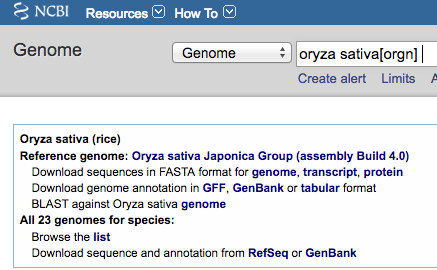

Contents
The ConvertNCBI script was updated 1/16/18; either get new release package or email symap at agcol.arizona.edu for a copy of it.
Download
- Go to NCBI.
- Select "Genome" from the pull-down at the top.
- Enter you genome name followed by "Search".
You should see a page similar to the one below.
- Download the FASTA and GFF file.
The GFF file must have the "product=" keyword in the attribute column for the mRNA type line.
Two approaches:
- Use the genome link beside the "Download sequences in FASTA format for genome,..."
Use the GFF link beside the "Download genome annotation in GFF...".
- Or use the RefSeq link in the "Download sequence and annotation from
RefSeq..." and download the files with the "fna.gz" and "gff.gz" suffixes.
Usually the first approach has the correct format, but if it does not, try the second.

Convert files
- Go to the symap_42/data/pseudo directory.
- Make a subdirectory for each of your projects and move the FASTA and GFF files
into their respective directory. Leave the "fna.gz" and "gff.gz" suffixes on the files.
- Type the following at the command line to copy the ConvertNCBI script to the pseudo directory:
cp ../../scripts/ConvertNCBI.class .
- For each project, execute
java ConvertNCBI {project directory name}
For example, I did the above steps for Rice. From my
symap_42/data/pseudo directory, executed:
java ConvertNCBI rice
This results in the following contents:
data/pseudo/
rice/
GCF_001433935.1_IRGSP-1.0_genomic.fna.gz
GCF_001433935.1_IRGSP-1.0_genomic.gff.gz
annotation/
gene.gff
exon.gff
sequence/
genomic.fna
The output gives useful details of the annotation (e.g. see rice details); if the details do not appear right, you may need to edit the
script for your genomes.
ConvertNCBI optional flags: The flags were updated as of 1/16/18; get new package or email symap at agcol.arizona.edu
for a copy of the new script.
| Flag | Description | Details | Default
| | -v | Verbose | Print out header lines of skipped sequences | No print
| | -s | Include Scaffolds in output | See section Scaffolds | No scaffolds
| | -l | Use linkage groups | Search 'linkage' instead of 'chromosome' | Use chromosomes
| | -r | Use only RefSeq records | -r and -g can be used together | Use all sources*
| | -g | Use only Gonome records | -r and -g can be used together | Use all sources*
|
*If neither -r or -g is used, then all sources are used.
What the ConvertNCBI script does
The following occurs in the data/pseudo/{project directory name} where "project directory name"
is the argument supplied to ConvertNCBI:
- Reads the file ending in '.fna.gz' (or '.fna') and writes a new file called sequence/genomic.fna with the following changes:
- Sequences must have the word "chromosome" in their ">" header line in order to be copied.
- The header line is replaced with ">ChrN" where N is 1,2... (Note, this assumes that the chromosomes
are in order in the file as it does not read the chromosome number from the header line).
For example,
>NC_029256.1 Oryza sativa Japonica Group cultivar Nipponbare chromosome 1, IRGSP-1.0
is replaced with:
>Chr1 NC_029256.1
- Reads the file ending in 'gff.gz' (or .gff) and writes two new files called annotation/gene.gff and
annotation/exon.gff, as follows:
- Only lines with the 'source' (2nd column) equal to 'Gnomon' are read.
- Only lines with the 'type' (3rd column) equal 'gene', 'mRNA', and 'exon' are read.
- The gene line is written to the gene.gff file with the following two changes:
- The first column 'seqid' is replace with the 'ChrN' value assigned when reading the '.fna' file.
- The last column 'attributes' keeps the "ID=" and "Name=" fields but replaces the rest of the
content with the "product=" values from its mRNA lines.
- If there are multiple mRNA lines for a gene where the values are different, they are concatenated together.
- If there are multiple mRNA lines for a gene where
the only difference is the variant, then only the variant difference is show, e.g.
product=monocopper oxidase-like protein SKU5%2C transcript variant X2, X1, X3
- The exon line is written to the exon.gff file with the first column 'seqid' is replace
with the 'ChrN' value assigned when reading the '.fna' file.
Load files into SyMAP
|
When you start up SyMAP, you will see your projects listed on the left of the panel. Check the projects
you want to load, which will cause them to be shown on the right of the symap window. Click the
"parameter" link,
which will bring up a panel as shown below.
|

|
Change the following:
- Select the "Add Directory" beside anno_files, then select the directory annotation.
- Select the "Add Directory" beside sequence_files, then select the directory sequence.
- You may want to change the following (view the "Help" to see explanations):
- category (default 'Unknown')
- display_name (default is the directory name)
- description (default blank)
- Set the parameters for all the projects you want to compare, then select "Load All Projects".
Once loaded, you can run the synteny algorithm be selecting "All Pairs". If you want to compute self-synteny,
you have to do that individually with the "Selected Pair" button.

Scaffolds
By default, the ConvertNCBI script creates the genomic.fna file with only the chromosomes.
However, you can have it also include the scaffolds by using the "-s" flag, e.g.
java ConvertNCBI rice -s
Beware, there can be many tiny scaffolds. If they all align, it causes the display to be very cluttered.
Hence, it is best to just align the largest ones (e.g. the longest 50); merge them if possible, then try
the smaller ones. You should set the following parameters:
- leave grp_prefix set to 'Chr' as then they will be shown with their number only, and scaffolds will
be prefixed with 's'.
- min_size should be set to only load the largest scaffolds. To determine the value to use, run the
lenFasta.pl script, e.g. from the pseudo directory and using maize as an example:
cp ../../scripts/lenFasta.pl .
perl lenFasta.pl maize/sequence/genomic.fna
Maize has 265 sequences where only 10 are chromosomes and the rest are scaffolds. The script outputs all their
sorted lengths followed by the following table:

To align the top 30 sequences, this says to set min_size to 215635.
Editing the script
This script was used to build the 2018 syntenies from
the NCBI genome and annotation files, which can be viewed at
symapdb2.
However, you may want the make changes such as what attributes are included. Therefore, the ConvertNCBI.java
code is supplied in the scripts directory. It is very simply written, it does not use external libraries
and only common programming techniques found in all programming languages.
Once you make your changes, execute:
javac ConvertNCBI.java
You will need to have JDK installed to use the 'javac' command.
When building the syntenies, I found the following two differences:
- Grape had both:
>NC_012007.3 Vitis vinifera cultivar PN40024 chromosome 1, 12X, whole genome shotgun sequence
>NW_003724154.1 Vitis vinifera cultivar PN40024 chromosome 1 unlocalized genomic scaffold,
Hence, searching for 'chromosome' was not sufficient since that word was contains on scaffold header lines; this was not the case for the other
downloaded genomes.
- Poplar used the word 'linkage' in the header lines instead of 'chromosome'.
Hence, there is not complete standardization, which is why you may need to edit the script for your genomes.
|
{kind=link}